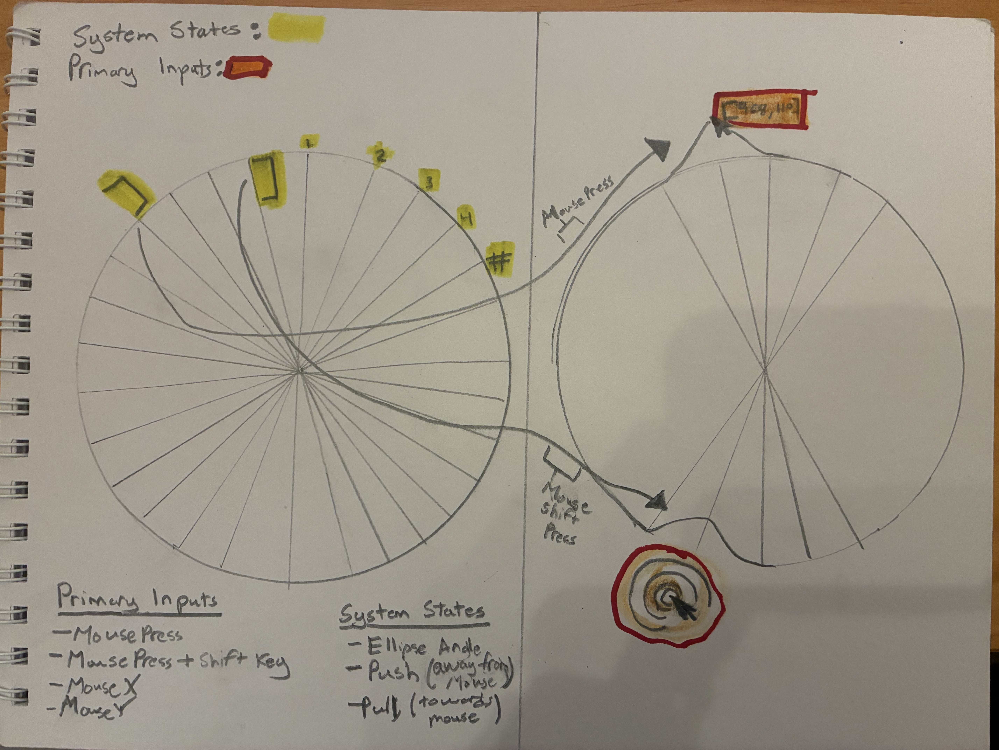
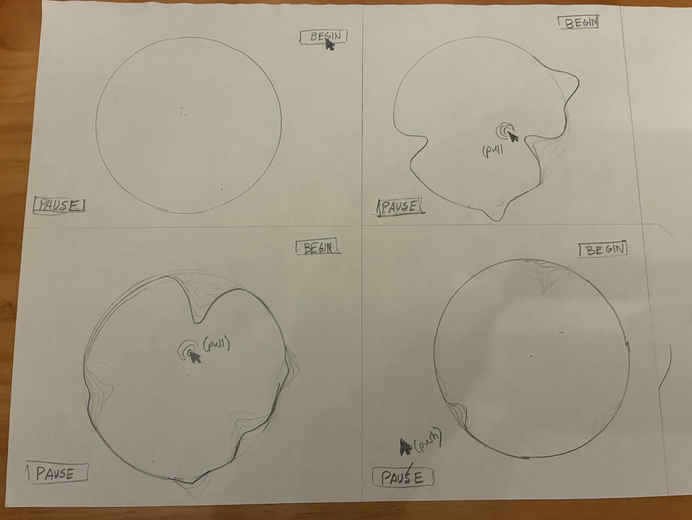

Micro Project
Idea: Amoeba
The core idea behind this sketch is that progress and change is a continuous process, as demonstrated by the amoeba change in form. The interaction will have an ellipse shrink and expand at certain angles while always slowly reverting back to a perfect ellipse (else statement). The system will become uneven in the why by which different angles of the elipse will be portruding or sunken depending on the way that the user interacts with the sketch. The way this sketch will work is that when a user clicks their mouse, the neared point of the ellipse will portrude while if they click and also hold shift the closest part of the ellipse will sink. As I mentioned before, after the person unclicks the area which is sunken or is portuding will slowly fall back in line on the circle. I think this sketch matter because of two reasons: First, It is a good representation for change which explores the way many things work. The circle itself could used as a representation of broken systems and how bandaids only help reform the shape/structure for a certain time but must continously be worked at or the shape much be changed all together. Secondly, the visual language of a shape adhereing and bendiing with a mouse entices me as it offers a new medium to explore different shapes and visuals by way of web design and coding.

